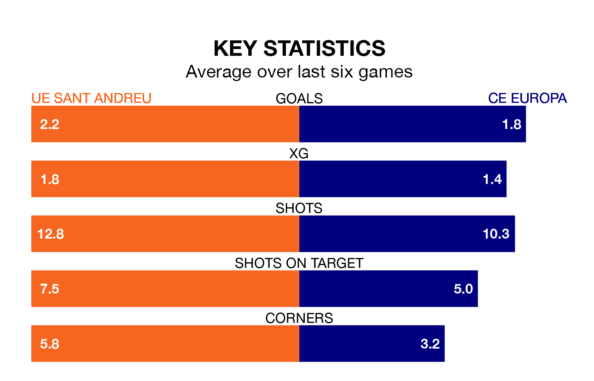

Sunday's late match between UE Sant Andreu and CE Europa promises to be one for the neutrals, as two of Segunda División RFEF Group 3's most free-scoring sides go head-to-head.
Ahead of the game at Camp Municipal Narcís Sala, UE Sant Andreu and CE Europa sit second and top in the goal-scoring charts, with 30 and 31 goals respectively.
CE Europa are top of the table after 19 games, of which they have won 10 and drawn six, earning 36 points.
UE Sant Andreu are four places behind the visitors in fifth, with nine wins and five draws putting them on 32 points.
In the last 10 years, UE Sant Andreu and CE Europa have played each other on six occasions. UE Sant Andreu won one of them, CE Europa two, and they drew three times.
On average, UE Sant Andreu scored 0.7 goals and CE Europa 1.3 in those matches.
Their last meeting was on September 17, when CE Europa won 3-0 at home.
The home side are in fantastic form in Segunda División RFEF Group 3, with five wins and one loss from their last six games.
With three wins and three draws over that period, CE Europa's form is worse – they have taken 12 points from 18, compared to UE Sant Andreu's 15.
UE Sant Andreu's last match was on January 21, a 2-1 loss against Cerdanyola del Vallès.
CE Europa beat Torrent 1-0 last time out, also on January 21.
Updated: 09:18 (UTC), 23/01/24